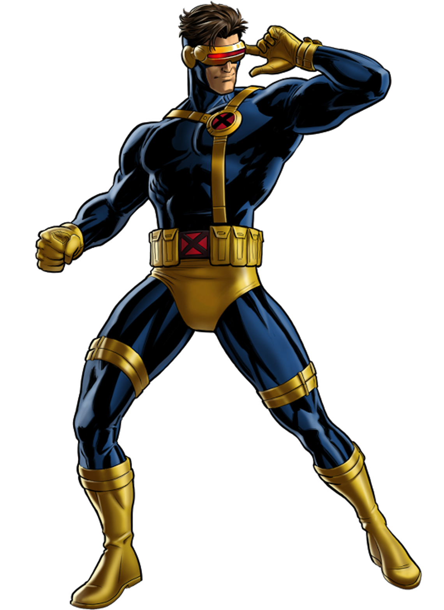
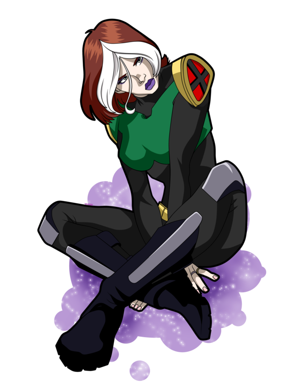
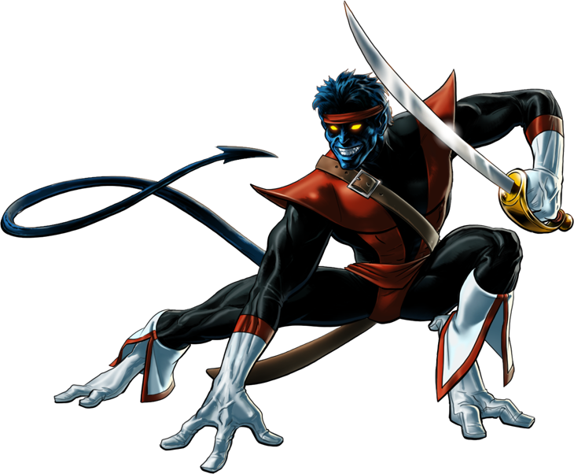
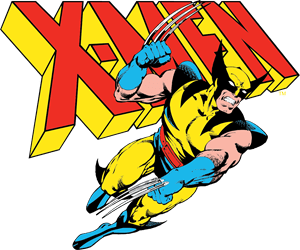

Personagens
Ciclope

Scott Summers é o filho mais velho do Major Christopher Summers (também conhecido como Corsário), um piloto de teste na Força Aérea dos Estados Unidos, e sua esposa Katherine Ann. Seu irmão mais novo é Alex, hoje conhecido como o mutante Destrutor.
Quando Scott e Alex eram meninos e estavam voando para casa após uma férias com a família no avião particular de seu pai, uma nave de reconhecimento do Império Shi'ar de repente se materializou e incendiou o avião. Katherine empurrou Scott e Alex para fora do avião com o único paraquedas disponível. O paraquedas pegou fogo, então Scott usou suas rajadas óticas mutantes pela primeira vez para desacelerar a sua queda. Scott e Alex não sabiam que seus pais haviam sido teletransportados do avião pelos Shi'ar um segundo antes de ele explodir.
Scott sofreu uma lesão na cabeça ao pousar, o que danificou a parte do cérebro de Scott que teria lhe permitido controlar suas rajadas óticas. Os dois garotos foram hospitalizados e ambos sofreram amnésia traumática sobre o incidente. O geneticista, que acabou sendo o Sr. Sinistro, teve um interesse nos garotos. Ele acreditava que Scott era o irmão Summers com o maior potencial, então ele fez Alex ser adotado para separá-los e tornar Scott emocionalmente vulnerável, algo que acabou dando certo.
Jean Grey

Jean Grey era a filha mais nova do Professor John Grey do Departamento de História do Colégio Bard em Annandale-on-Hudson, Nova York, e sua esposa Elaine Grey. Quando Jean tinha dez anos de idade, ela estava brincando com sua melhor amiga, Annie Richardson, quando Annie foi atropelada por um carro. A emoção que Jean sentiu enquanto ela segurava sua amiga morrendo despertou seus próprios poderes telepáticos latentes e ela experimentou as próprias emoções de Annie enquanto ela morria. Este evento traumático deixou Jean em um estado afastado e profundamente deprimida. Além disso, Jean não podia controlar sua recém-despertada habilidade telepática e teve que se isolar das outras pessoas para manter sua sanidade.
Quando Jean tinha onze anos, um psiquiatra recomendou a seus pais que consultassem um colega seu, o Professor Charles Xavier, o qual era secretamente um mutante com habilidades telepáticas. O Prof. Xavier explicou a Jean, mas não aos pais dela, que ela era uma mutante e ele tratou dela durante vários anos. O professor ensinou a Jean como levitar e manipular objetos através da força psíquica quando ela desenvolveu telecinese aos treze anos. Xavier até mesmo usou a jovem Jean para calibrar o seu dispositivo Cérebro. Durante uma sessão particular, um aspecto da mente da jovem Jean surgiu sob a forma de uma Fênix de Fogo para tocar a mente do jovem órfão Scott Summers enquanto ele dormia. O Prof. Xavier ergueu barreiras psíquicas na mente de Jean para que ela não fosse capaz de usar suas habilidades telepáticas até que tivesse desenvolvido a maturidade necessária para lidar com elas.
Vampira

Vampira teve uma vida sofrida com a sua Tia Carrie, após ser muito maltratada pela sua tia ela acabou fugindo de casa, e sendo adotada pela Mistica. O poder mutante de Vampira manifestou-se pela primeira vez no início da adolescência, quando em sua casa a menina beijou um garoto chamado Cody Robbins e sua mente foi invadida pelas memórias do rapaz, que entrou em coma permanente.
Percebendo que nunca poderia viver com pessoas normais, Vampira começou a participar de atividades criminosas junto de sua mãe adotiva e, assim como Mística, juntou-se à Irmandade de Mutantes. Em sua primeira missão, a inexperiente mutante enfrentou Miss Marvel (Carol Danvers) e absorveu permanentemente as memórias e poderes da heroína, incluindo super-força e capacidade de voar mais logo depois perdeu. E foi quando Vampira percebeu que o que ela fez foi errado e acabou entrando no time dos X-Men, mas no começo foi difícil, mas logo ela conseguiu se "segurar".
Professor X

Charles Xavier é um mutante dotado de vastos poderes telepáticos, especialista em biologia e sociologia mutante e o fundador dos Fabulosos X-Men como Professor X. Com imenso apoio da Dra. Moira MacTaggert, sua vida se dedicou a realizar seu sonho de coexistência pacífica entre mutantes e humanos. Quando jovem, viajou pelo mundo para compreender melhor a espécie mutante, encontrando um amigo querido e rival implacável, o homem que se tornaria conhecido como Magneto.[26]
Após se tornar paraplégico após um conflito contra o vilão Lúcifer nos Himalaias, Xavier transformou a casa ancestral de sua família na Escola Xavier para Jovens Superdotados, um santuário para mutantes treinarem e aprenderem sobre suas habilidades. Sob sua supervisão, os alunos do Professor X formaram os primeiros X-Men, um grupo de super-heróis que lutam por um mundo que os odeia e teme, guiados pelo sonho de Xavier. Ao longo dos anos, Xavier e seus X-Men se encontraram em conflito tanto com humanos quanto com mutantes de ideologias divergentes, especialmente Magneto, que acreditava na supremacia mutante.
Para garantir a sobrevivência da mutandade, Xavier eventualmente assumiu uma postura mais rígida no conflito entre mutantes e humanos. Influenciado por Moira e auxiliado por Magneto, Professor X estabeleceu uma nação mutante na ilha viva de Krakoa, concedendo cidadania a toda a espécie mutante. Como chefe de estado da nação mutante, Professor X é atualmente responsável por uma comunidade muito maior do que apenas os X-Men, que compreende milhares de mutantes.
Noturno

Sob a forma de uma nobre Alemã, a mutante Mística casou-se com o Barão Christian Wagner. Enquanto isso, Mística teve um caso com o misterioso Azazel de La Isla des Demonas e ficou grávida de seu filho. Azazel disse a Mística para criar seu filho como se fosse do Conde. Raven, de coração partido, concordou e, embora Christian suspeitava quanto à paternidade do bebê, sua súbita morte "acidental" assegurou que ninguém mais ouvisse suas suspeitas. O bebê nasceu visivelmente mutado com pelo azul por todo o corpo, orelhas pontudas, olhos iridescentes e uma cauda. Devido ao choque e o estresse do difícil parto do menino, Mistica perdeu a concentração e, acidentalmente, revelou sua verdadeira forma. A notícia se espalhou sobre ela e a condição do bebê e os dois foram perseguidos por uma multidão enfurecida empunhando tochas. Mística desmaiou e deixou o jovem Kurt Wagner flutuando em um rio durante a sua fuga.
Wolverine

Wolverine nasceu James Howlett no norte de Alberta, Canadá, no final da década de 1880, supostamente filho dos ricos proprietários de fazendas John e Elizabeth Howlett, embora ele seja realmente o filho ilegítimo de Elizabeth e do caseiro dos Howletts, Thomas Logan. Depois que Thomas é expulso da propriedade dos Howlett por uma tentativa de estupro perpetrada por seu outro filho, chamado simplesmente Cão, ele retorna à mansão Howlett e mata John Howlett. Em retaliação, o jovem James mata Thomas com garras de osso que emergem da parte de trás de suas mãos, conforme a sua mutação se manifesta. Ele foge com sua companheira de infância, Rose, e vive ate a idade adulta em uma colônia de mineração em Yukon, adotando o nome de "Logan". Quando Logan acidentalmente mata Rose com suas garras, ele foge da colônia e vive no deserto entre os lobos, até ser capturado e colocado em um circo. Saul Creed, irmão de Victor Creed, liberta Logan, mas depois que ele trai Logan e Clara Creed para Nathaniel Essex, Logan afoga Creed na poção de Essex. Logan retorna à civilização, residente com a tribo Blackfoot. Após a morte de sua amante Blackfoot, Raposa Prateada, nas mãos de Victor Creed, agora conhecido como Dentes-de-Sabre, ele é conduzido aos militares canadenses durante a Primeira Guerra Mundial. Logan passa o tempo em Madripoor antes de se instalar no Japão, onde ele se casa com Itsu e tem um filho, Daken. Logan não conhece seu filho por muitos anos.